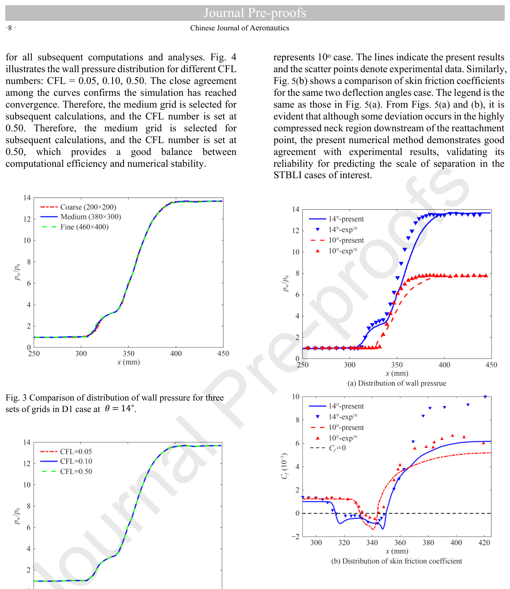
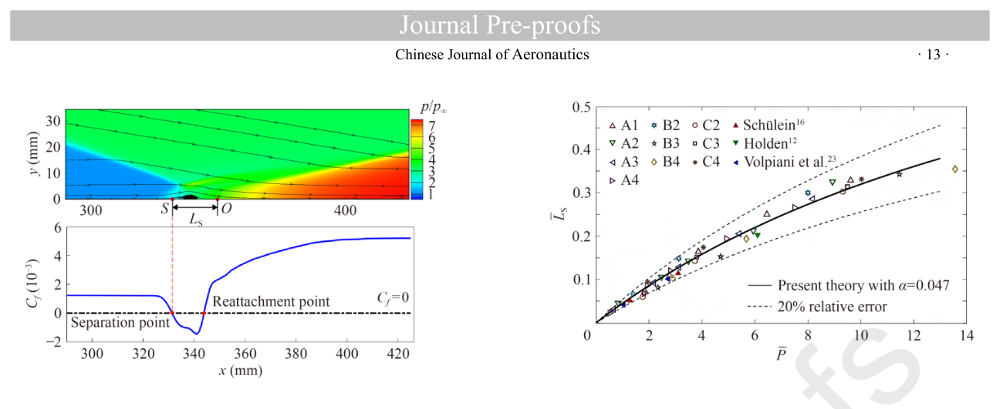
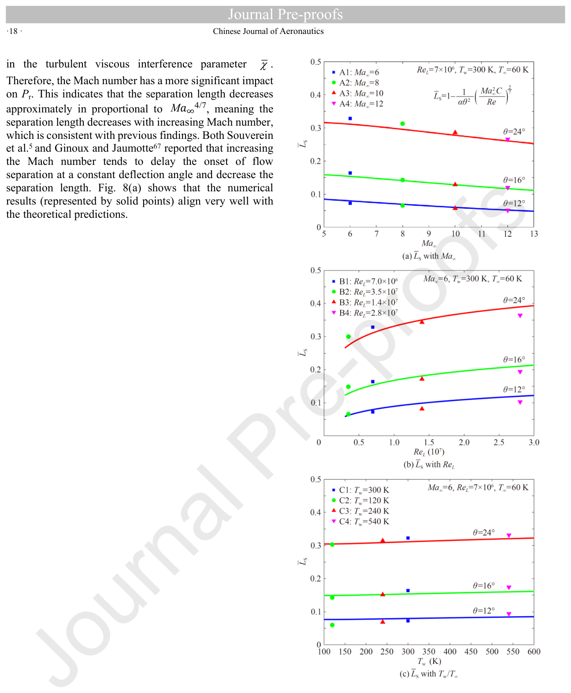
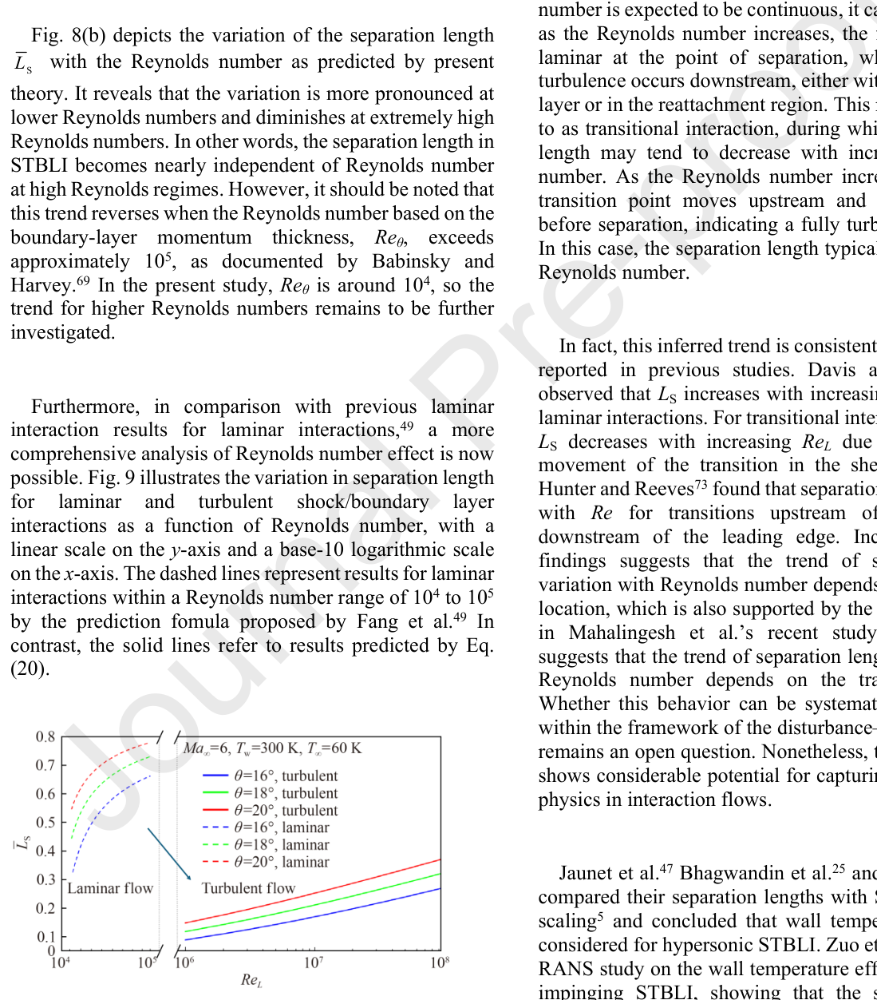

01中文摘要
研究高超声速激波/湍流边界层干扰的物理机制，指出入射激波强度和边界层剪切效应强度是控制分离长度的两个关键因素。引入扰动强度和抵抗强度概念，以二者相对差定义归一化扰动强度；借助经典自由干扰理论证明无量纲分离长度可表示为归一化扰动强度的函数，据此提出扰动-抵抗模型预测STBLI分离长度。通过宽范围来流参数下的RANS模拟验证模型，并给出马赫数、雷诺数和壁温比影响分离行为的物理解释。
原始摘要（英文/原文）
In this study, the physical mechanisms underlying Shock wave/Turbulent Boundary Layer Interactions (STBLI) are investigated and two key factors are identified as governing the separation length: The strength of the incident shock and the intensity of the boundary layer’s shear effect. To quantify these effects, the concepts of disturbance strength and resistance strength are introduced, and their relative difference is defined as the normalized disturbance strength. By applying classical free interaction theory, it is demonstrated that the non-dimensional separation length can be expressed as a function of the normalized disturbance strength. Accordingly, a new model, referred to as the disturbance–resistance model, is proposed for predicting the separation length in STBLI. This model is validated through comprehensive Reynolds-Averaged Navier-Stokes (RANS) simulations conducted over a wide range of freestream flow parameters. Furthermore, this predictive model provides a clearer physical interpretation of how primary parameters, such as Mach number, Reynolds number, and wall-to-freestream temperature ratio, influence separation behavior of the interaction flows.
02阅读说明
期刊预印本（Chinese Journal of Aeronautics, 2026, DOI 10.1016/j.cja.2026.104153, 26 页）。材料为 build/deep_input/1039.md 全文（1402 行）、图件清单与图注；公式核对使用原 PDF 的 pp.10–13（4 页）。式(14)、(15)、(19) 的系数在 PDF 文本层被拆散，本文只保留可复核的结构与式(17)、(20)–(27)；式(21) 下方 LS+xS=0 与公式本身矛盾，已按 L=0.35 m 记为 LS+xS=L 并在 open_questions 中保留原文疑点。文中 p 编号均指 bundle 的 PDF 页（比页眉印刷页大约 1 页）。 文章类型：期刊
03一句话核心与三句话摘要
提出扰动—阻力模型，用 K=Ma∞θ 与 χ̄ 显式预测 STBLI 分离长度，多数误差小于 15%。
- 高超声速 STBLI 的分离长度缺少统一显式预测，既有关联式多依赖边界层厚度，难以直接给出对 Ma、Re、Tw 的依赖。 AI概括
- 作者把分离长度归结为激波引起的扰动强度 Pd 与边界层抵抗分离的阻力强度 Pr 之差，提出无量纲分离长度 L_S=αP̄/(1+αP̄)，并用 K²=σχ̄ 确定 incipient separation。 原文明确
- 以 α=0.047、σ=0.438 标定后，多数算例预测误差小于 15%，并给出 L_S 约随 Ma^(-4/7)、随 Re 的 -2/7 幂变化的标度；但 Re 幂次与同段“LS 随 Re 增大”的叙述符号不一致。 原文明确
04核心内容清单
| 要点 | 类型 | 重要性 | 原文依据 | 属性 |
|---|---|---|---|---|
| 分离长度由 Pd 与 Pr 的相对差 P̄ 控制，L_S=αP̄/(1+αP̄)。 | 理论 | A | 式(13)、(20)–(21)，p10–12 | 原文明确 |
| incipient 判据 K²=σχ̄，σ=0.438，给出 θinc∝Re^(-1/7)。 | 理论 | A | 式(17)，p11–12 | 原文明确 |
| α=0.047，多数算例预测误差 <15%，多数落在 ±20% 带内。 | 数值/实验 | A | 表2，p15–18；图7，p14 | 原文明确 |
| Ma 双重作用，Pr 增强更快，LS 约按 Ma^(-4/7) 减小。 | 理论/数值 | A | 式(27)，p18；图8(a)，p19 | 原文明确 |
| Re 只削弱 Pr，物理上 LS 随 Re 增大；但文中标度写作 Re^(-2/7)，符号自相矛盾。 | 理论/文本一致性 | A | p19–20 | 原文明确 |
| Tw 通过 C∈(0.95,1.30) 弱影响 LS，Tw 升高使 LS 略增。 | 理论/数值 | B | p20；图8(c)，p19 | 原文明确 |
| 少数大误差来自 LS 很小（0.020–0.080），绝对误差仅 0.01–0.02。 | 数值 | B | 表2，p15–18 | AI概括 |
| Reθ>10^5 的趋势反转与过渡干扰尚未纳入，本文 Reθ≈10^4。 | 讨论 | B | p19–20 | 原文明确 |
| 层流与湍流可在同一框架下比较，相同 Re 下层流分离更长。 | 对比 | C | 图9，p20 | 原文明确 |
| 压缩角推广只是展望，本文未验证。 | 展望 | C | p21 | 原文明确 |
| α=0.047 与表2 理论值不一致：表值对应有效 α≈0.060，按 0.047 计算会系统性低估约 20–25%。 | 数值一致性 | B | 式(21)，p12；表2，p15–18 | AI推断 |
05引言：研究问题与领域缺口
高超声速飞行器上的入射激波/湍流边界层干扰（STBLI）会产生分离泡，分离长度 LS 直接决定壁面压力、热流与操纵面效率。作者指出，既有研究已定性地识别 Ma、Re、Tw/T∞、θ 的影响，也提出过多种以压力比或边界层厚度为自变量的关联式，但这些关联式覆盖的工况范围不同、结果分散，而且边界层厚度本身依赖 Re 与 Ma，难以从中显式分离出各参数的作用。本文目标是建立一个只含已知来流无量纲参数的统一显式模型，并把层流中 Fang 等的 disturbance–resistance 思想推广到湍流（p9–10）。
06流动条件与几何构型
| 项目 | 数值/描述 | 依据 | 备注 |
|---|---|---|---|
| A1 工况 | Ma∞=6；Reunit=2×10^7 m^-1；Tw=300 K；Tw/T∞=5；θ=8°–24°；δ=4.894 mm；δθ=0.205 mm | 表1，p6 | |
| A2 工况 | Ma∞=8；Reunit=2×10^7 m^-1；Tw=300 K；Tw/T∞=5；θ=8°–24°；δ=4.894 mm；δθ=0.205 mm | 表1，p6 | |
| A3 工况 | Ma∞=10；Reunit=2×10^7 m^-1；Tw=300 K；Tw/T∞=5；θ=8°–24°；δ=4.894 mm；δθ=0.205 mm | 表1，p6 | |
| A4 工况 | Ma∞=12；Reunit=2×10^7 m^-1；Tw=300 K；Tw/T∞=5；θ=8°–24°；δ=4.894 mm；δθ=0.205 mm | 表1，p6 | |
| B1 工况 | Ma∞=6；Reunit=1×10^7 m^-1；Tw=300 K；Tw/T∞=5；θ=8°–24°；δ=5.622 mm；δθ=0.236 mm | 表1，p6 | |
| B2 工况 | Ma∞=6；Reunit=2×10^7 m^-1；Tw=300 K；Tw/T∞=5；θ=8°–24°；δ=4.894 mm；δθ=0.205 mm | 表1，p6 | |
| B3 工况 | Ma∞=6；Reunit=4×10^7 m^-1；Tw=300 K；Tw/T∞=5；θ=8°–24°；δ=4.261 mm；δθ=0.179 mm | 表1，p6 | |
| B4 工况 | Ma∞=6；Reunit=8×10^7 m^-1；Tw=300 K；Tw/T∞=5；θ=8°–24°；δ=3.709 mm；δθ=0.156 mm | 表1，p6 | |
| C1 工况 | Ma∞=6；Reunit=2×10^7 m^-1；Tw=300 K；Tw/T∞=5；θ=8°–24°；δ=4.894 mm；δθ=0.205 mm | 表1，p6 | 与 B2/A1 参数相同，用于与其他组交叉对照。 |
| C2 工况 | Ma∞=6；Reunit=2×10^7 m^-1；Tw=300 K；Tw/T∞=2；θ=8°–24°；δ=4.462 mm；δθ=0.187 mm | 表1，p6 | |
| C3 工况 | Ma∞=6；Reunit=2×10^7 m^-1；Tw=300 K；Tw/T∞=4；θ=8°–24°；δ=4.790 mm；δθ=0.201 mm | 表1，p6 | |
| C4 工况 | Ma∞=6；Reunit=2×10^7 m^-1；Tw=300 K；Tw/T∞=9；θ=8°–24°；δ=5.165 mm；δθ=0.217 mm | 表1，p6 | |
| D1 工况 | Ma∞=5；Reunit=3.7×10^7 m^-1；Tw=300 K；Tw/T∞=4.4；θ=10°、14°；δ=4.813 mm；δθ=0.202 mm | 表1，p6；p8 | |
| 几何与来流 | 平板，激波入射点 O 固定在前缘下游 L=0.35 m；D1 来流 T0=410 K、p0=2.12×10^6 Pa、Ma=5；壁温 300±5 K（计算取 300 K） | §2.1，p6–8 | |
| 气体与黏性 | 空气；Sutherland 黏性，S=110.4 K；比热比按空气处理（具体值文中未单列） | §2，p8 | γ 的数值材料中未明确给出。 |
| 数值模型 | 二维 RANS；rhoCentralFoam 密度基可压有限体积；KNP 格式、Van Leer 限幅器；k-ω SST（F1 混合、β*=9/100、a1=0.31） | §2.2，p7–8 | |
| 网格与时间步 | 粗/中/细网格 200×200、380×300、460×400，取中等网格；y+<1；入射点与壁面局部加密；CFL=0.50（另测 0.05、0.10） | §2.2，p8–9；图3、图4 | |
| 验证工况 | 与 Schülein 实验在 θ=10°、14° 的壁面压力与摩阻对比；再与 Volpiani 等 DNS、Holden 实验对比分离长度 | 图5，p9；图7，p14；表2，p15–18 | |
| 理论适用对象 | 二维、入射-反射斜激波/湍流边界层干扰；不包含三维效应、真实气体效应与压缩角构型 | §3、§4，p9–21 |
07核心现象与关键参数
| 参数 | 定义 | 数值 | 关系/说明 | 依据 |
|---|---|---|---|---|
| Ma∞ | 来流 Mach 数 | 5–12（A1–A4 取 6、8、10、12；D1 取 5） | 通过 K=Ma∞θ 与 χ̄ 双重影响 LS | 表1，p6 |
| Reunit | 单位长度 Reynolds 数 | 1×10^7–8×10^7 m^-1（D1 为 3.7×10^7 m^-1） | 进入 χ̄，Re 增大削弱 Pr | 表1，p6；p8 |
| Tw/T∞ | 壁温与来流静温之比 | 2–9（D1 为 4.4）；Tw=300 K | 通过 Chapman–Rubesin 参数 C 影响 Pr | 表1，p6 |
| θ | 激波发生器偏转角（入射激波角） | 8°–24°；D1 为 10°、14° | K=Ma∞θ；θ 增大使 Pd 增大 | 表1，p6 |
| δ、δθ | 入射点 O 处的边界层厚度与动量厚度 | δ=3.709–5.622 mm；δθ=0.156–0.236 mm | 随 Re 与 Tw 变化，用于表1 表征来流边界层 | 表1，p6 |
| L | 前缘到激波入射点 O 的距离（参考长度） | 0.35 m | L_S=LS/L；LS+xS=L | p6、p14 |
| K | 高超声速相似参数 K=Ma∞θ | 由各工况 Ma 与 θ 组合 | K²=σχ̄ 为 incipient 判据 | 式(17)，p11 |
| χ̄ | 强干扰湍流黏性干扰参数 | 由 Ma∞、C、Re 组合（具体表达式见式(17) 下方；PDF 文本层指数被拆散） | K²=σχ̄；χ̄ 表征边界层剪切/抵抗能力 | 式(17)，p11 |
| σ | incipient 判据系数 | 0.438 | 假定与来流条件无关，特定于入射-反射 STBLI | p12 |
| α | 线性分离律 LS/xS=αP̄ 的系数 | 0.047（拟合值） | L_S=αP̄/(1+αP̄) | 式(20)–(21)，p12；p14 |
| P̄ | 归一化扰动强度 P̄=(Pd-Pr)/Pr | 由各工况计算；表2 给出 0.470–9.560 | L_S=αP̄/(1+αP̄)，P̄=0 时 LS=0 | 式(13)、(21)，p10、p12；表2 |
| C | Chapman–Rubesin 参数，把壁温对黏性的影响归并到 Pr 中（p20 给出表达式，但排版/OCR 不完整，未能逐字确认） | 本文工况 0.95–1.30 | Tw/T∞ 通过 C 进入 Pr；本文工况 C∈(0.95,1.30) | p20 |
| Reθ | 以动量厚度定义的 Reynolds 数 | 本文约 10^4 | Reθ>10^5 时趋势可能反转（引 Babinsky–Harvey） | p19–20 |
08方法与数据
理论部分：把分离长度写成归一化扰动强度 P̄ 的函数（式(11)–(13)）；用激波关系定义 Pd（式(14)–(15)），用 incipient separation 定义 Pr（式(16)）；用 K²=σχ̄ 给出 incipient 判据（式(17)），其中 K=Ma∞θinc、χ̄ 为强干扰湍流黏性干扰参数，σ=0.438；再由 free interaction theory 取 LS/xS=αP̄（式(20)），结合 LS+xS=L 得式(21)；α 由数值/实验数据拟合为 0.047。数值部分：OpenFOAM 的密度基可压求解器 rhoCentralFoam，KNP 格式、Van Leer 限幅器、k-ω SST 湍流模型；三套网格 200×200、380×300、460×400，取中间网格，y+<1；测试 CFL=0.05、0.10、0.50，取 0.50；以 Schülein 的壁面压力与摩阻实验验证（p6–9、p14）。共 13 个工况（A1–A4、B1–B4、C1–C4、D1），覆盖 Ma∞=5–12、Reunit=1×10^7–8×10^7 m^-1、Tw/T∞=2–9、θ=8°–24°，L=0.35 m 固定（表1，p6）。
| 项目 | 内容 | 依据 | 备注 |
|---|---|---|---|
| 控制方程与求解器 | 二维可压缩 RANS；OpenFOAM rhoCentralFoam 密度基有限体积 | §2.2.1，p7 | |
| 通量格式 | KNP 格式 + Van Leer 限幅器，激波与接触间断处保持稳定 | §2.2.1，p7–8 | |
| 湍流模型 | k-ω SST，包含 F1 混合函数、β*=9/100、a1=0.31 | §2.2，p8 | |
| 网格无关性 | 粗 200×200、中 380×300、细 460×400；D1 θ=14° 的壁面压力三套网格对比后取中网格 | §2.2，p8；图3，p9 | |
| 时间步/CFL 无关性 | CFL=0.05、0.10、0.50 对比后取 0.50 | 图4，p9 | |
| 壁面与来流条件 | 壁温 300 K；y+<1；来流按 D1 的 T0、p0、Ma 给定；入射点 O 固定在 L=0.35 m | §2.1，p8；表1，p6 | |
| 数值验证 | 与 Schülein θ=10°、14° 的壁面压力和摩阻分布对比；除再附点下游颈部外吻合良好 | 图5，p9 | |
| 分离点提取 | 取壁面摩阻系数曲线第一个零点为分离点 S，O 到 S 的距离为 LS，L_S=LS/L | p14；图6，p14 | |
| 理论标定 | 用数值与已有实验/DNS 数据拟合 α=0.047；用 σ=0.438 固定 incipient 判据 | p12、p14 | |
| 误差评估 | 表2 逐工况列出 P̄、数值 L_S、理论 L_S,theory 与相对误差；图7 给出 ±20% 带 | 表2，p15–18；图7，p14 |
09核心推导与公式
把分离长度写成归一化扰动强度 P̄ 的函数；Pd 由入射激波压力升给出，Pr 由 incipient separation 的临界激波强度给出；再用 free interaction 的线性关系 LS/xS=αP̄ 与几何约束 LS+xS=L 闭合，得到 L_S=αP̄/(1+αP̄)。
关键假设
- 二维、定常、入射-反射斜激波/湍流边界层干扰；忽略三维、真实气体与壁面曲率效应。
- 分离由逆压梯度与边界层抵抗两个竞争因素控制，P̄=(Pd-Pr)/Pr 足以参数化。
- Pd 用激波后压力升 (p_d-p∞)/p∞ 度量；Pr 用 incipient separation 时的同一度量。
- incipient 判据 K²=σχ̄ 中的 σ 与来流条件无关，且对入射-反射 STBLI 为常数。
- free interaction theory 给出 LS/xS 与 P̄ 的线性关系，比例系数 α 由数值/实验标定。
- 边界层在入射点 O 处的 δ、δθ 由 RANS 给出，L=0.35 m 固定。
推导过程
定义 L_S=LS/L、P̄=(Pd-Pr)/Pr；层流 ramp 的结果提示 L_S=P/(1+P)，本文把它推广为 L_S=f(P̄)，再由 free interaction 取线性形式。
由高但有限 Mach、小角度下的激波关系写出 p_d/p∞，再定义 Pd=(p_d-p∞)/p∞。式(14)–(15) 的系数在 PDF 文本层被拆散，这里只保留定义式。
把边界层刚达到分离时的激波强度定义为 Pr，即 Pr=Pd|inc；这样 Pd 与 Pr 使用同一度量，减少 P̄ 的不确定性。
把 incipient 处的压力升与强干扰湍流黏性干扰参数 χ̄ 联系：K²=σχ̄，K=Ma∞θinc；σ 由数值/实验定为 0.438。
free interaction theory 把干扰区压力梯度与壁面剪切、边界层厚度联系起来；沿流向积分可得 Δp/p_u~L_u/x_u，说明分离长度与压力升成正比、与抵抗尺度成反比。
取 LS/xS=αP̄；由 O 固定、LS+xS=L 得 L_S=αP̄/(1+αP̄)。α=0.047 由数值/实验拟合。
在 Ma≫1 下，式(15)、(19) 化为 Pd≈2γ(γ+1)K² 与 Pr≈2γ(γ+1)χ̄；式(27) 的具体指数在扫描件中被拆散，本文只保留可与式(17) 复核的标度。
由 K²=σχ̄ 得 θinc∝Re^(-1/7)；对固定 θ，Ma 增大使 Pr 相对增强，LS 约按 Ma^(-4/7) 减小。Re 的幂次文中写作 -2/7，但同段又说 Re 增大使 LS 增大，符号不一致；按物理叙述应为正幂。
用 13 个 RANS 工况及 Schülein、Holden、Volpiani 数据拟合 α=0.047；图7 给出 ±20% 带，表2 给出逐工况相对误差，多数 <15%。
适用边界：式(14)、(15)、(19) 的系数与式(17) 的 χ̄ 指数受 PDF 文本层排版限制，无法逐字复核；式(21) 下方 LS+xS=0 与公式矛盾；Re 标度符号与物理叙述矛盾；α、σ 为拟合/假定常数；仅覆盖二维 RANS、Reθ≈10^4、入射-反射 STBLI，不含三维、真实气体、转捩与压缩角。
10结果：主要发现与关键证据
incipient 判据给出 θinc∝Re^(-1/7)，σ=0.438（式(17)，p11–12）。以 α=0.047 代入式(21) 后，图7 的预测与 Schülein、Holden 实验及 Volpiani 等 DNS 多数落在 ±20% 带内；表2 中多数算例相对误差小于 15%，最大几个为 C2 θ=12° 的 28.00%、Schülein θ=10° 的 25.93%、B3 θ=12° 的 19.52%、A4 θ=10° 的 19.29%，作者归因于分离长度本身很小、绝对误差不大（p14–17）。参数趋势：Ma 同时增强 Pd 与 Pr，但 Pr 增强更快，LS 约按 Ma^(-4/7) 减小；Re 只削弱 Pr，文中写 LS 约按 Re^(-2/7) 变化，但同段物理叙述说 Re 增大使 LS 增大；Tw/T∞ 通过 Chapman–Rubesin 参数 C（本文 0.95–1.30）弱影响 LS，Tw 升高使 LS 略增（p17–20；图8、图9）。
| 发现 | 证据 | 证据类型 | 强度 | 位置 | 属性 |
|---|---|---|---|---|---|
| 分离长度由扰动强度 Pd 与阻力强度 Pr 的相对差 P̄ 统一控制，L_S=αP̄/(1+αP̄)。 | 式(13)、(20)、(21) 给出定义与闭合；P̄=0 时 LS=0，P̄>0 后 LS 单调增。 | 理论 | 强 | 式(13)、(20)–(21)，p10–12 | 原文明确 |
| incipient separation 判据为 K²=σχ̄，σ=0.438；由此 θinc∝Re^(-1/7)。 | 式(17) 及下文；σ 由大量数值模拟与实验/DNS 对比定出。 | 理论 | 强 | 式(17)，p11–12 | 原文明确 |
| 取 α=0.047 后，多数算例预测误差小于 15%，多数点落在 ±20% 带内。 | 表2 逐项误差；图7 的 ±20% 带；作者称少数大误差来自 LS 很小、绝对误差不大。 | 数值/实验对比 | 强 | 表2，p15–18；图7，p14 | 原文明确 |
| Ma 对 LS 有双重作用：既增强 Pd 也增强 Pr，但 Pr 增强更快，净效果是 LS 约按 Ma^(-4/7) 减小。 | 式(27) 的简化；图8(a) 的数值点与理论线一致；与 Souverein、Ginoux–Jaumotte 的定性结论一致。 | 理论/数值 | 强 | 式(27)，p18；图8(a)，p19 | 原文明确 |
| Re 只削弱 Pr，故 Re 增大使 LS 增大；但文中把标度写成 LS∝Re^(-2/7)，与同段物理叙述方向相反。 | p20 正文说“increase in Re leads to a decrease in Pr ... and thus an increase in LS”；紧接又写“approximately proportional to Re-2/7”。 | 理论/文本一致性 | 中 | p19–20 | 原文明确 |
| 壁温升高使 LS 略增，但影响明显弱于 Ma 与 Re。 | 图8(c)；Tw/T∞ 只通过 C 进入 Pr，本文 C∈(0.95,1.30)；作者引 Zuo 等的结果说 Ma=6、Reθ=2930、θ=6° 时 Tw/Tr=0.25 与 0.75 的 L_S 差约 5%。 | 理论/数值 | 中 | p20；图8(c)，p19 | 原文明确 |
| Reθ>10^5 时 Re 趋势可能反转；本文 Reθ≈10^4，不能覆盖该区。 | 作者引 Babinsky–Harvey 的观察，并明确说更高 Re 的趋势仍需研究。 | 讨论/推断 | 中 | p19–20 | 原文明确 |
| 少数算例误差超过 15%，最大为 C2 θ=12° 的 28.00%、Schülein θ=10° 的 25.93%、B3 θ=12° 的 19.52%、A4 θ=10° 的 19.29%。 | 表2；这些工况的 L_S 本身很小（0.020–0.080），绝对误差仅约 0.01–0.02。 | 数值/实验对比 | 中 | 表2，p15–18 | 原文明确 |
| 层流与湍流可用同一 disturbance–resistance 框架描述；相同 Re 下层流分离更长。 | 图9 把 Fang 等层流预测与本文湍流预测画在同一 Re 轴；层流线在相同 Re 下给出更大的 LS。 | 理论/对比 | 中 | 图9，p20 | 原文明确 |
| 该模型有推广到压缩角 STBLI 的潜力，但本文未验证。 | 结论末尾引 Holden、Kuehn、Settles 等关于压缩角与入射激波分离等价性的观察，作为后续工作方向。 | 展望 | 弱 | p21 | 原文明确 |
| 用 α=0.047 代入式(21) 不能复现表2 的理论值：按 L_S=αP̄/(1+αP̄) 计算，结果比表中 L_S,theory 系统性低约 20–25%，表值对应的有效 α 约为 0.060。 | 以 A1/B1/C1 θ=12° 为例，P̄=1.440 时式(21) 给 0.063，而表2 给 0.080；取 α≈0.060 才给 0.0795。逐行反算 α=L_S/[P̄(1-L_S)] 均在 0.056–0.064。 | 数值一致性 | 中 | 式(21)，p12；正文 α=0.047，p14；表2，p15–18 | AI推断 |
11机制解释与论证链
分离由两个竞争量决定：入射激波造成的逆压梯度（扰动强度 Pd）和边界层自身抵抗分离的能力（阻力强度 Pr）。Pd 用激波后的压力升 p_d-p∞ 度量；Pr 用边界层刚好达到 incipient separation 时的激波强度度量，因而与 Re、Ma、Tw 通过黏性干扰参数相联系。归一化扰动强度 P̄=(Pd-Pr)/Pr 表示“超过抵抗阈值的那部分”相对大小；P̄≤0 不分离，P̄>0 后分离长度按 free interaction 的线性关系 LS/xS=αP̄ 增长，再由 LS+xS=L 得 L_S=αP̄/(1+αP̄)。K=Ma∞θ 控制压力升，χ̄ 控制剪切/抵抗；Ma 同时增大两者但后者更快，故 LS 随 Ma 减小；Re 只削弱抵抗，故 LS 随 Re 增大；Tw 通过 C 改变抵抗，影响较弱。
12讨论：结论、贡献与局限
作者把 K 解释为作用在边界层上的不利压力梯度，把 χ̄ 解释为边界层剪切/抵抗分离的能力；分离是否发生取决于 Pd 是否超过 Pr，超过后 LS 随 (Pd-Pr)/Pr 增大。Mach 的双重作用来自 Pd∝Ma²θ² 与 Pr 随 Ma 的更快增长，净效果是 Ma 增大使 LS 减小；Re 只进入 Pr 的分母，Re 增大使抵抗能力下降、LS 增大；Tw 通过 C 改变 Pr，影响弱于 Ma 与 Re。作者还讨论了 Reθ>10^5 时 Babinsky–Harvey 观察到的趋势反转，以及过渡干扰中 LS 可能随 Re 减小；本文 Reθ≈10^4，不能覆盖该区。最后提出该模型可能推广到压缩角 STBLI（p18–21）。
作者结论
作者提出一个以扰动强度 Pd 和阻力强度 Pr 为核心的 STBLI 分离长度预测模型。Pd 由入射激波压力升定义，Pr 由 incipient separation 条件定义，二者之差归一化为 P̄；分离长度满足 L_S=αP̄/(1+αP̄)，α=0.047。incipient 判据为 K²=σχ̄，σ=0.438，给出 θinc∝Re^(-1/7)。经 13 个 RANS 工况及 Schülein、Holden、Volpiani 数据校验，多数预测误差小于 15%。作者给出 LS 约随 Ma^(-4/7) 减小、随 Re 的 -2/7 幂变化、随 Tw/T∞ 略增的结论，并把 Ma 的双重作用、Re 对抵抗的削弱、Tw 通过 C 的作用作为物理机制。
主要贡献
- 提出以扰动强度 Pd 与阻力强度 Pr 为核心的 disturbance–resistance 模型，把 STBLI 分离长度写成只含来流无量纲参数的显式式 L_S=αP̄/(1+αP̄)。
- 给出 K²=σχ̄ 的 incipient separation 判据（σ=0.438），并标定 α=0.047。
- 用 13 个 RANS 工况及 Schülein、Holden、Volpiani 数据验证模型，给出 Ma^(-4/7) 标度并讨论 Re、Tw 的影响与局限。
局限与未解决问题
第一，模型是二维 RANS 标定，湍流由 k-ω SST 给出，未解析转捩、分离剪切层和再附；α=0.047 是拟合值，σ=0.438 被假定与来流无关且只适用于入射-反射 STBLI。第二，式(14)、(15)、(19) 的系数在 PDF 文本层被拆散，无法逐字复核；式(17) 的 χ̄ 指数、式(27) 的 Pr 指数也只能按上下文和标度关系恢复，精确形式“受限于材料，无法确认”。第三，式(21) 下方原文写 “LS+xS=0”，与 L_S=LS/L、L=0.35 m 及式(21) 本身矛盾；本文按 LS+xS=L 理解，但保留该疑点。第四，Re 标度写成 Re^(-2/7) 与同段“Re 增大使 LS 增大”的物理叙述符号相反，不能同时成立。第五，α=0.047 与表2 理论值不一致：用 0.047 代入式(21) 系统性低于表值约 20–25%，表值对应 α≈0.060。第六，工况 Reθ≈10^4，未覆盖 Reθ>10^5 的反转区、过渡干扰、三维效应、真实气体效应与压缩角构型。
13对高速流动与工程的意义
该文把层流中提出的 disturbance–resistance 思想系统推广到高超声速湍流 STBLI，把分离长度从“依赖边界层厚度的关联式”改写为只含 Ma、Re、Tw、θ 的显式式，物理上明确区分激波扰动与边界层抵抗两个竞争因素。它给出的 K²=σχ̄ incipient 判据、α=0.047 的线性闭合以及 Ma^(-4/7) 标度，便于工程快速估算；同时把 Re 趋势、壁温影响和过渡区不确定性摆到明面，为后续高保真验证与压缩角推广提供了可检验的框架。
14核心图件




15可引用原文素材
| 原文短句 | 可支持的观点 | 位置 | 使用建议 |
|---|---|---|---|
| “disturbance–resistance model” | 全文模型的名称与核心思想。 | 摘要，p2 | 核心概念 |
| “resistance strength” | Pr 表征边界层抵抗分离的能力。 | §3.1，p10 | 核心概念 |
| “K² = σχ̄” | incipient separation 的定量判据。 | 式(17)，p11 | 定量结论 |
| “σ = 0.438” | 判据系数的标定值。 | p12 | 定量结论 |
| “α = 0.047” | 线性分离律的拟合系数。 | p14 | 定量结论 |
| “less than 15%” | 多数算例的预测精度。 | p14、p21 | 精度 |
| “4/7 power law” | LS 随 Ma 的标度。 | 结论，p21 | 标度 |
| “remains an open question” | 过渡干扰的 Re 趋势尚未纳入模型。 | p20 | 局限 |
16最终核验
| 核验项 | 结论 |
|---|---|
| 仅基于全文 | 是。仅使用 build/deep_input/1039.md 的全文（1402 行）、图件清单和图注，以及原 PDF 的 pp.10–13（4 页）公式核对；未引入外部文献、教科书推导或未给出的数值。 |
| A 级要点有依据 | 是。A 级要点均给出式号/表号/图号：式(13)、(20)–(21)（p10–12）、式(17)（p11–12）、表2（p15–18）、图7（p14）、式(27) 与图8（p18–19）。 |
| 属性标注 | 是。three_sentence、findings、core_points 均带 attr；由作者原文直接给出的结论标原文明确，跨节归纳标 AI概括，对符号/量级的外推标 AI推断，并在 limits 中保留原文矛盾。 |
| 覆盖范围 | bundle 共 1402 行，分两段读到 EOF；摘要、§1–§4、表1、表2、图1–图9、参考文献前的结论与致谢均覆盖。公式核对读取 PDF pp.10–13，与式(11)–(27) 对照。 |
| 无编造 | 未编造页码、图号、公式或数据。式(14)、(15)、(19) 的系数与式(17) 的 χ̄ 指数在 PDF 文本层被拆散，未强行复原；表1、表2 的数值逐项抄自 bundle；C 的表达式、γ 的取值等未明确处写“文中未提及/无法确认”。 |
需回原文确认
- 式(17) 中 χ̄ 的精确表达式与指数是什么？PDF 文本层显示为 Ma∞、C、Re 的组合，但指数被拆散，无法逐字确认。
- 式(27) 中 Pr 的 Ma、Re、C 指数如何由式(17)、(19) 推出？18/7 与 2/7 的排版是否可靠？
- 式(21) 下方原文写 LS+xS=0，但公式要求 LS+xS=L；这是排版笔误还是定义问题？
- Re 标度写 Re^(-2/7)，同段又说 Re 增大使 LS 增大，二者符号矛盾；哪一个是作者真正想表达的？
- α=0.047 与 σ=0.438 是否对其他激波强度、Mach 数、壁温或三维构型仍然适用？
- Reθ>10^5 的趋势反转与过渡干扰能否纳入 P̄ 框架？作者自己说仍是 open question。
- 模型能否推广到压缩角 STBLI？需要怎样的 Pr 定义与验证数据？
- α=0.047 与表2 理论值反算出的有效 α≈0.060 不一致，哪个系数才是式(21) 实际使用的？
17关联文献
依据标签、板块、构型与作者脉络自动关联，可据此追踪同一问题的前序与后续工作。
18引用格式
选择期刊风格后复制；出处保留原刊名。BibTeX 可直接用于 LaTeX。
引用格式
Wang, H., Zhu, B., Chen, Z. & Bao, L. 2026 Prediction of separation length for hypersonic shock wave/turbulent boundary layer interactions. Chinese Journal of Aeronautics 104153. https://doi.org/10.1016/j.cja.2026.104153
PDF上传 PDF 并更新本页
本页缺少全文、摘要或图件时，可在浏览器本地补入 PDF。解析完全在本机完成，不上传网络；完成后会更新本页的 PDF 打开链接、原摘要、IMRaD 机器抽取、关键句与含图页面。复杂的公式语义与中文深度解读仍以原文和既有精读记录为准。